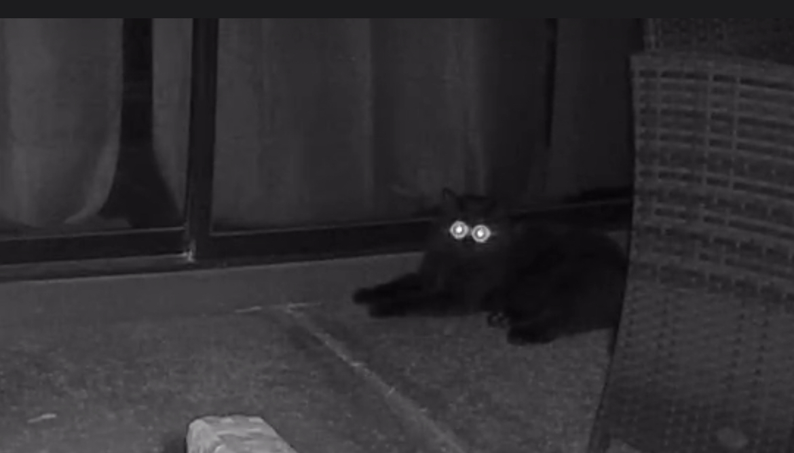

The siggy as a grid is really interesting. Note how in the grid he is specified and we must make it around the Siggy.
The siggy as a flex is really interesting. Note how in the flex, it is driven by the content.